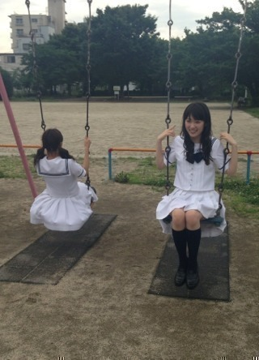
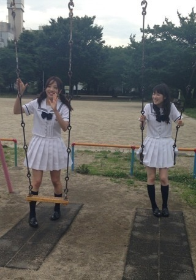
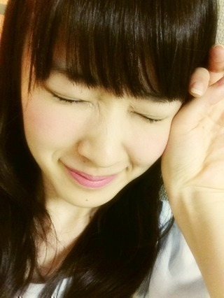

2013/0621Fri（´-`）.｡oO(か ずみん×181
こんばんは！
みなさん元気ですか(´;ω;`)？
昨日は〜
ダウンタウンDXの撮影でしたっ！
相変わらず楽しい収録だったな♪
最近はTV収録もリラックスして
できるようになりました(*´ｰ`*人)
バナナマンさんがこの間、
バラエティは喋るぞ喋るぞって
力んで待ってるよりも
リラックスしていた方が
いいっておっしゃっていて、
私もその通りだと思いました>_<
ただ、私はリラックスしていても
喋ると慌ててる感MAXに...笑
ダウンタウンDXは
7月18日OAです！
よろしくお願いします(*´ω`*)ﾉ
バケラッタ！！！
一昨日は東京スポーツさんの
昭和にアメイジングの取材ヽ(´>∀<`*)ﾉ
毎回楽しみなのです！
今回のゲストはこの方♪

そうです！
ツインテールと言えば、この人！

能條さん！！前髪www
じょーずで昭和スポットを巡ったよ♪
もうじょーさんのブログに
載ってたね！笑
楽しい記事になると思います！
7月10日以降発売よ！！
毎週水曜日（九州地区のみ木曜日）
東スポチェックしてみてくださいっ！
移動のロケバスですぐ寝てしまう私。
でもじょーさんと喋ってたら
笑いっぱなし！！ゲラゲラ(っ`∀´*)
私笑いのツボ浅くないんだけどな〜
だからじょーさんと仕事一緒だと
笑いが絶えなくて楽しいのよー！
ははは☆
あ、またほうれいせんが
深くなるわ...((((/*0*)/
あ、この前言ってた高校の友達とも
会ってきました！
やっばみんなギャグ線高いわ〜
ファミレスでずっと喋り倒して
笑い狂いました(っ`∀´*)
私のこと変わってなくて良かったって
言ってくれて嬉しかった(T_T)
アイドルになっても
友達の前ではただの友達です！！
みんなは可愛くなってて(*´ｰ`*人)
でもやっぱり中身は変わってなくて、
楽しかった♪
今日は乃木ののラジオの収録でした！
いやぁ、、笑った笑った(っ*´x`)っ
第14回に出ます！よろしく！
終わってからちずーと
パンケーキ♪♪
ちずーとは引き笑い姉妹です(*´ω`*)
いぇい☆
やばいぞ、
このまま面白い人と一緒にいると、
ちょっとやそっとのお笑いじゃ
笑わない人になりそうだ...笑
明日からも笑って過ごせますように！
みなさんも、私も。
沢山内容詰め込んでごめんね。
それでは(*´ω`*)ﾉ

2013/06/21 21:42


コメント(312)
かずみん、面白いよ！
こんばんは♪
また、コメントしまーす(笑)
かずみん､大活躍ですね。
へばっまずな(^-^)/~~
MJもたのしみー＼(^o^)／
あれ？なんかかずみん久々の更新？？ｗ
またＤＸの収録行ってきたんだ！
一実さん浜ちゃんに嵌ってるもんね～ｗｗ
今ラジオ聞いてたよ＼(^o^)／
お前がURL読み上げちゃあかんだろwww
吹き出したわwww
DTDXも乃木ののも楽しみにしてるね(｡･ω･｡)
ちはるんとさゆにゃんとの乃木のの
楽しみ過ぎ。
早く聞きたい。
こんばんは♪
早速コメント２回目です(笑)
ちはるんが乃木ののに出るんですか!?( ; ゜Д゜)
メッチャクチャ嬉しいです(笑)
最近、ちはるんともよく一緒にいますよね(*^^*)
ラジオドラマ聞きましたよ！
かずみんのセリフは別に普通のセリフなのに笑えました！(笑)
かずみんのキャラが爆発してましたね(笑)
かずみん超絶可愛い！(照)
明日も頑張ってください(^-^)/
では、お休みなさい(-.-)Zzz・・・・
かずみんの個性が際立った演技だったね。
特にシーハウスAKBの店員役の少しセクシーな感じがハマってたよ。
またラジオでかずみんの声聞きたいです。
今日のラジオドラマ、乃木坂の曲がたくさん流れてたね。お客さんのリクエストに応えてくれる海の家あったら面白いやろなあ。ライバルの家の名前が「ありえないくらい規模がばかでかい」シーハウスってのも見てみたいけど。
山ちゃんに個性的って言われてたね。番組のサイト言うとき、最後らへん、ぐだぐだ感でてたけど最後まで突っ走っててかずみんらしかったよ。
またラジオドラマあったらええなあ。
ダウンタウンDXに、また出演するんですね‼すごい楽しみです。
かずみんが喋ってるとこをみるだけでも、元気が貰えます。ほんと、かずみんに助けられてます
． ∧＿∧
ｒy´・ω・｀ヽっ
`! かずみん i
ゝc＿c_,.ノ
（
）
.∧＿∧.(
(´・ω・ ∩
o ,ノ
Ｏ＿ .ノ
.(ノ
かずみん、こんばんはっ！ブロンソンだよ♪( ´θ｀)ノ
さっきまでラジオなら聴いてたよ！かずみん頑張ってたね。ちょっと笑っちゃったw
乃木ののもDTDXも楽しみにしてるねー✺◟(∗❛ัᴗ❛ั∗)◞✺
かずみんホントに毎日笑顔が絶えなくていいねー(*˘︶˘*).｡.:*♡
それじゃこれからも頑張ってね！ブロンソンは高山一実を応援し続けます（＾◇＾）
収録お疲れ様です(´∀｀)
放送楽しみにしてるよ〜
僕も明日、昔の友達と遊んできます(・∀・)
ラジオも楽しみにしてます(>_<)
アメイジンクだー
頑張ってね♪
もっともっとバラエティで活躍して下さい。
アカン警察にもでてるしダウンタウンさんとの共演多いですね！
めちゃくちゃ楽しみですー！！
ダウンタウンみるしかーー！！！
なんだとっ！？ゆったんかと思ったら
まさかのじょーさんwwwwwwwwww
わろた(´・ω・`)/~~
バスの中とかめっちゃ楽しそう～
また握手会いくねっ
夢で会おうぜアディオス
(*´ω｀*)(*´ω｀*)(*´ω｀*)
ずっとかずみんが出るの楽しみにしてたから嬉しい！
DXも前回大活躍だっただけに楽しみ♪
バナナマンさん優しいね( ´ ▽ ` )
沢山内容あって嬉しいよ(●´ω｀●)
かずみんのおかげで笑って過ごせてるみたいなとこあるヽ( ´ー｀)ノ
仕事が最近大変なんだけど、かずみさんの笑顔に癒されて頑張れる。
ありがとう。毎日楽しそうだね。
早く会いたいです。
頑張るわ。よし。
今日もお疲れさま！
やっぱり、かずみんのブログ、写真見ると元気出るよう＼(^o^)／
ありがとう♪
いっぱいお仕事充実してて、かずみんの活躍を見るのがめちゃくちゃ楽しみですヾ(＠⌒ー⌒＠)ノ☆
ダウンタウンDX2回目とか、さすがかずみん！！
今日もだいすきだよー♡♡♡
ラジオ聴いたよー！！
おもしろかったよ(*>ω<*)
これからも、もっとこういうお仕事
増えていったらいいねー꒰｡･ω･。꒱*:･
アイドルになっても友達から変わらないって言われることはすごいと思うよ(^-^)/
いつまでも変わらないでいてほしいな（ ´∀｀）
ダウンタウンDXと乃木のの楽しみ(^∇^)
今日のブログは内容盛りたくさんだね（笑）
仕事とプライベート充実してるようで良かったよ♪
今の内からTVは予約しておくから（≧∇≦）
すごくよかった
かずみんの声は、すぐにわかるね
また、出演する機会があったらいいね
東スポの記事
楽しみにしてるよ
いやあ、能條さんとの昭和のやつはおもしろそうだね。
早く東スポ読みたい。
なんかかずみんと能條って乃木坂のおもしろツートップだと思うわけですよ。きっとみんなもそう思っている人多いに違いないじゃないですか。
なので楽しみ。
バケラッタ！！！
友達との関係はお互いいい関係を保っているようで良かったね。
そういう友達、大切だよね。いつまでも仲良くね。
乃木のの、楽しみにしてる。
写メかわいい。
じゃあ。
かずみ雑誌買ったよ(゜ロ゜)
かずみんがいろいろなものに出てくれてて嬉しいです!!
かずみん面白いので、それをもっと活かしていってください!!(*´ω｀*)
それでは。。(〃_ _)σ∥ゆいゴマ
かずみん(*^^*)
テレビも忙しそうで
なによりだ！
ブランコのかずみん
可愛いな(●´∀｀●)
かずみんお仕事中頑張ってね(*^^*)
菜奈(●´∀｀●)
面白い喜劇ドラマだったね！
充分に笑えたよ！
作り込みよりも、アドリブというか、その場その場の何気ない一言の方が面白みのインパクトがあるから、必要以上に緊張しないでねっ
テレビラジオのOA＆東スポ連載、楽しみにしてまっす
今日も
昨日は
お疲れ様
確かに
面白いこと
どんな
作った
だしていった
そして
収録
ちずーは
なんか
では明日も
たーちゃんより
ダウンタウンDX楽しみにしています！
ダウンタウンは私が住んでいる街のスーパースターなので、私の好きな乃木坂メンバーがまた、出演出来て、とっても嬉しいです！
さて、先程NHK-FM聞きました。ストーリーも良かったと思います。メンバーの個性も出てました。
また、期待しています！
それでは、体には気をつけて下さい！
アメージング！
ぼちぼち元気にしてるよ。
収録や取材などお疲れ様。ダウンタウンDXのOA日は仕事が夜勤でリアルタイムでは見れないけど録画して見るね♪
前の時面白かったし楽しみ(^o^)
沢山な内容全然大丈夫だよ。充実してるみたいだからこっちも嬉しくなるし、頑張らないとって思えるよ！
では今日も１日お疲れ様☆
また放送日近くになったら告知してね(^o^)／
ダウンタウンさんとの絡み多いね(^O^)
気に入られたみたいでよかったよo(^-^)o
ラジオのwww.
笑いましたよw
素のかずみんが俺は好きだから、いつもの乃木どこの高山節を他のバラエティでも出してくださーい！
あとテスト終わったー！
なんか、俺ではとうていずーさんを笑わせられなさそう(T ^ T)
ダウンタウンさんの番組率高山やね〜気にいられたんかな（￣+ー￣）
ジョーさんやちはるちゃんと安定感あるし、高校の友達と素のずーさんで過ごせたみたいやし…
なんか俺までほっこりやわ＼(^o^)／
ずーさんに会いたいけど、会えない時間もずーさんの幸せな笑顔を想って頑張ります☆
お互い明日も笑顔で…
アメイジング＼(^o^)／
赤チョッパー帽子のまさひろ
ダウンタウン楽しみにしてるね！^ ^
もちろん元気〜！！
でも、もうすぐ期末テストはじまるんよ ...
ポジティブ＼(^o^)／
かずみんと、じょーさんの会話って、なんかすごそう！！(笑)Σヾ(＞ω＜=)
お互いギャグ言い合ってそう！！(笑)Σヾ(＞ω＜=)
乃木どこでも、かずみんには毎回めっちゃ笑わせてもらってるんよ〜(*｀ω´*)ﾄﾞﾔｯ
ほんとーほうれい線増えちゃうよ！！
いつも笑いをくれてありがとう(*￣∀￣)ゞｴﾍﾍ
かずみんの笑顔で、こっちも笑顔になれるんよ(笑)o(｀ω´*)o
かずみんのことガジ大好き〜Σヾ(＞ω＜=)
かずみんのこと、ずっと応援してるよ〜(o・・o)/~
ポジティブSAY！！
今日もお疲れさまですm(_ _)m
まーこは、一実さんの笑顔が大好きです(*^o^*) 仕事で疲れて帰ってきても、一実さんが番組で、おもいっきり喋って、おもいっきり笑っているのを見てると疲れも飛んでいくし、幸せな気分になります。
一実さんが成長されるのは嬉しいけど、いい意味で変わらない一実さんでいてほしいです。
今日も笑顔をありがとう。体調にも気をつけてねo(^-^)o
ごきげんよう( ~っ~)/
ダウンタウンDXにまた出るんだー！！
これは絶対観なきゃ！！笑
能條さんはブログ読んでいてもめちゃくちゃ面白いよー(o^^o)
笑ってしまう理由もわかります。笑
今日はこの辺で！！
またコメントします*\(^o^)/*
ななみだよ～(。>д<)
かずみんが最近テレビに
出てくれて嬉しい(*^^*)
絶対見るね!!
じょーさんとの絡み最近本当多いね♪
二人とも面白くて話に加わりたい…笑
名古屋全握行くからね♪
かずみん大好き♪
コメントする